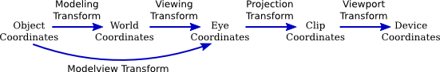

Section 3.3
Projection and Viewing
In the previous section, we looked at the modeling transformation, which transforms from object coordinates to world coordinates. However, for 3D computer graphics, you need to know about several other coordinate systems and the transforms between them. We discuss them in this section.
We start with an overview of the various coordinate systems. Some of this is review, and some of it is new.
3.3.1 Many Coordinate Systems
The coordinates that you actually use for drawing an object are called object coordinates. The object coordinate system is chosen to be convenient for the object that is being drawn. A modeling transformation can then be applied to set the size, orientation, and position of the object in the overall scene (or, in the case of hierarchical modeling, in the object coordinate system of a larger, more complex object). The modeling transformation is the first that is applied to the vertices of an object.
The coordinates in which you build the complete scene are called world coordinates. These are the coordinates for the overall scene, the imaginary 3D world that you are creating. The modeling transformation maps from object coordinates to world coordinates.
In the real world, what you see depends on where you are standing and the direction in which you are looking. That is, you can't make a picture of the scene until you know the position of the "viewer" and where the viewer is looking—and, if you think about it, how the viewer's head is tilted. For the purposes of OpenGL, we imagine that the viewer is attached to their own individual coordinate system, which is known as eye coordinates. In this coordinate system, the viewer is at the origin, (0,0,0), looking in the direction of the negative z-axis; the positive direction of the y-axis is pointing straight up; and the x-axis is pointing to the right. This is a viewer-centric coordinate system. In other words, eye coordinates are (almost) the coordinates that you actually want to use for drawing on the screen. The transform from world coordinates to eye coordinates is called the viewing transformation.
If this is confusing, think of it this way: We are free to use any coordinate system that we want on the world. Eye coordinates are the natural coordinate system for making a picture of the world as seen by a viewer. If we used a different coordinate system (world coordinates) when building the world, then we have to transform those coordinates to eye coordinates to find out what the viewer actually sees. That transformation is the viewing transform.
Note, by the way, that OpenGL doesn't keep track of separate modeling and viewing transforms. They are combined into a single transform, which is known as the modelview transformation. In fact, even though world coordinates might seem to be the most important and natural coordinate system, OpenGL doesn't have any representation for them and doesn't use them internally. For OpenGL, only object and eye coordinates have meaning. OpenGL goes directly from object coordinates to eye coordinates by applying the modelview transformation.
We are not done. The viewer can't see the entire 3D world, only the part that fits into the viewport, which is the rectangular region of the screen or other display device where the image will be drawn. We say that the scene is "clipped" by the edges of the viewport. Furthermore, in OpenGL, the viewer can see only a limited range of z-values in the eye coordinate system. Points with larger or smaller z-values are clipped away and are not rendered into the image. (This is not, of course, the way that viewing works in the real world, but it's required by the use of the depth test in OpenGL. See Subsection 3.1.4.) The volume of space that is actually rendered into the image is called the view volume. Things inside the view volume make it into the image; things that are not in the view volume are clipped and cannot be seen. For purposes of drawing, OpenGL applies a coordinate transform that maps the view volume onto a cube. The cube is centered at the origin and extends from -1 to 1 in the x-direction, in the y-direction, and in the z-direction. The coordinate system on this cube is referred to as clip coordinates. The transformation from eye coordinates to clip coordinates is called the projection transformation. At this point, we haven't quite projected the 3D scene onto a 2D surface, but we can now do so simply by discarding the z-coordinate. (The z-coordinate, however, is still needed to provide the depth information that is needed for the depth test.)
Note that clip coordinates are the coordinates will be used if you apply no transformation at all, that is if both the modelview and the projection transforms are the identity. It is a left-handed coordinate system, with the positive direction of the z-axis pointing into the screen.
We still aren't done. In the end, when things are actually drawn, there are device coordinates, the 2D coordinate system in which the actual drawing takes place on a physical display device such as the computer screen. Ordinarily, in device coordinates, the pixel is the unit of measure. The drawing region is a rectangle of pixels. This is the rectangle that is called the viewport. The viewport transformation takes x and y from the clip coordinates and scales them to fit the viewport.
Let's go through the sequence of transformations one more time. Think of a primitive, such as a line or triangle, that is part of the scene and that might appear in the image that we want to make of the scene. The primitive goes through the following sequence of operations:

- The points that define the primitive are specified in object coordinates, using methods such as glVertex3f.
- The points are first subjected to the modelview transformation, which is a combination of the modeling transform that places the primitive into the world and the viewing transform that maps the primitive into eye coordinates.
- The projection transformation is then applied to map the view volume that is visible to the viewer onto the clip coordinate cube. If the transformed primitive lies outside that cube, it will not be part of the image, and the processing stops. If part of the primitive lies inside and part outside, the part that lies outside is clipped away and discarded, and only the part that remains is processed further.
- Finally, the viewport transform is applied to produce the device coordinates that will actually be used to draw the primitive on the display device. After that, it's just a matter of deciding how to color the individual pixels that are part of the primitive.
We need to consider these transforms in more detail and see how to use them in OpenGL 1.1.
3.3.2 The Viewport Transformation
The simplest of the transforms is the viewport transform. It transforms x and y clip coordinates to the coordinates that are used on the display device. To specify the viewport transform, it is only necessary to specify the rectangle on the device where the scene will be rendered. This is done using the glViewport function.
OpenGL must be provided with a drawing surface by the environment in which it is running, such as JOGL for Java or the GLUT library for C. That drawing surface is a rectangular grid of pixels, with a horizontal size and a vertical size. OpenGL uses a coordinate system on the drawing surface that puts (0,0) at the lower left, with y increasing from bottom to top and x increasing from left to right. When the drawing surface is first given to OpenGL, the viewport is set to be the entire drawing surface. However, it is possible for OpenGL to draw to a different rectangle by calling
glViewport( x, y, width, height );
where (x,y) is the lower left corner of the viewport, in the drawing surface coordinate system, and width and height are the size of the viewport. Clip coordinates from -1 to 1 will then be mapped to the specified viewport. Note that this means in particular that drawing is limited to the viewport. It is not an error for the viewport to extend outside of the drawing surface, though it would be unusual to set up that situation deliberately.
When the size of the drawing surface changes, such as when the user resizes a window that contains the drawing surface, OpenGL does not automatically change the viewport to match the new size. However, the environment in which OpenGL is running might do that for you. (See Section 3.6 for information about how this is handled by JOGL and GLUT.)
glViewport is often used to draw several different scenes, or several views of the same scene, on the same drawing surface. Suppose, for example, that we want to draw two scenes, side-by-side, and that the drawing surface is 600-by-400 pixels. An outline for how to do that is very simple:
glViewport(0,0,300,400); // Draw to left half of the drawing surface.
.
. // Draw the first scene.
.
glViewport(300,0,300,400); // Draw to right half of the drawing surface.
.
. // Draw the second scene.
.
The first glViewport command establishes a 300-by-400 pixel viewport with its lower left corner at (0,0). That is, the lower left corner of the viewport is at the lower left corner of the drawing surface. This viewport fills the left half of the drawing surface. Similarly, the second viewport, with its lower left corner at (300,0), fills the right half of the drawing surface.
3.3.3 The Projection Transformation
We turn next to the projection transformation. Like any transform, the projection is represented in OpenGL as a matrix. OpenGL keeps track of the projection matrix separately from the matrix that represents the modelview transformation. The same transform functions, such as glRotatef, can be applied to both matrices, so OpenGL needs some way to know which matrix those functions apply to. This is determined by an OpenGL state property called the matrix mode. The value of the matrix mode is a constant such as GL_PROJECTION or GL_MODELVIEW. When a function such as glRotatef is called, it modifies a matrix; which matrix is modified depends on the current value of the matrix mode. The value is set by calling the function glMatrixMode. The initial value is GL_MODELVIEW. This means that if you want to work on the projection matrix, you must first call
glMatrixMode(GL_PROJECTION);
If you want to go back to working on the modelview matrix, you must call
glMatrixMode(GL_MODELVIEW);
In my programs, I generally set the matrix mode to GL_PROJECTION, set up the projection transformation, and then immediately set the matrix mode back to GL_MODELVIEW. This means that anywhere else in the program, I can be sure that the matrix mode is GL_MODELVIEW.
To help you to understand projection, remember that a 3D image can show only a part of the infinite 3D world. The view volume is the part of the world that is visible in the image. The view volume is determined by a combination of the viewing transformation and the projection transformation. The viewing transform determines where the viewer is located and what direction the viewer is facing, but it doesn't say how much of the world the viewer can see. The projection transform does that: It specifies the shape and extent of the region that is in view. Think of the viewer as a camera, with a big invisible box attached to the front of the camera that encloses the part of the world that that camera has in view. The inside of the box is the view volume. As the camera moves around in the world, the box moves with it, and the view volume changes. But the shape and size of the box don't change. The shape and size of the box correspond to the projection transform. The position and orientation of the camera correspond to the viewing transform.
This is all just another way of saying that, mathematically, the OpenGL projection transformation transforms eye coordinates to clip coordinates, mapping the view volume onto the 2-by-2-by-2 clipping cube that contains everything that will be visible in the image. To specify a projection just means specifying the size and shape of the view volume, relative to the viewer.
There are two general types of projection, perspective projection and orthographic projection. Perspective projection is more physically realistic. That is, it shows what you would see if the OpenGL display rectangle on your computer screen were a window into an actual 3D world (one that could extend in front of the screen as well as behind it). It shows a view that you could get by taking a picture of a 3D world with an ordinary camera. In a perspective view, the apparent size of an object depends on how far it is away from the viewer. Only things that are in front of the viewer can be seen. In fact, ignoring clipping in the z-direction for the moment, the part of the world that is in view is an infinite pyramid, with the viewer at the apex of the pyramid, and with the sides of the pyramid passing through the sides of the viewport rectangle.
However, OpenGL can't actually show everything in this pyramid, because of its use of the depth test to solve the hidden surface problem. Since the depth buffer can only store a finite range of depth values, it can't represent the entire range of depth values for the infinite pyramid that is theoretically in view. Only objects in a certain range of distances from the viewer can be part of the image. That range of distances is specified by two values, near and far. For a perspective transformation, both of these values must be positive numbers, and far must be greater than near. Anything that is closer to the viewer than the near distance or farther away than the far distance is discarded and does not appear in the rendered image. The volume of space that is represented in the image is thus a "truncated pyramid." This pyramid is the view volume for a perspective projection:

The view volume is bounded by six planes—the four sides plus the top and bottom of the truncated pyramid. These planes are called clipping planes because anything that lies on the wrong side of each plane is clipped away. The projection transformation maps the six sides of the truncated pyramid in eye coordinates to the six sides of the clipping cube in clip coordinates.
In OpenGL, setting up the projection transformation is equivalent to defining the view volume. For a perspective transformation, you have to set up a view volume that is a truncated pyramid. A rather obscure term for this shape is a frustum. A perspective transformation can be set up with the glFrustum command:
glFrustum( xmin, xmax, ymin, ymax, near, far );
The last two parameters specify the near and far distances from the viewer, as already discussed. The viewer is assumed to be at the origin, (0,0,0), facing in the direction of the negative z-axis. (This is the eye coordinate system.) So, the near clipping plane is at z = −near, and the far clipping plane is at z = −far. (Notice the minus signs!) The first four parameters specify the sides of the pyramid: xmin, xmax, ymin, and ymax specify the horizontal and vertical limits of the view volume at the near clipping plane. For example, the coordinates of the upper-left corner of the small end of the pyramid are (xmin, ymax, -near). The x and y limits at the far clipping plane are larger, usually much larger, than the limits specified in the glFrustum command.
Note that x and y limits in glFrustum are usually symmetrical about zero. That is, xmin is usually equal to the negative of xmax and ymin is usually equal to the negative of ymax. However, this is not required. It is possible to have asymmetrical view volumes where the z-axis does not point directly down the center of the view.
Since the matrix mode must be set to GL_PROJECTION to work on the projection transformation, glFrustum is often used in a code segment of the form
glMatrixMode(GL_PROJECTION); glLoadIdentity(); glFrustum( xmin, xmax, ymin, ymax, near, far ); glMatrixMode(GL_MODELVIEW);
The call to glLoadIdentity ensures that the starting point is the identity transform. This is important since glFrustum modifies the existing projection matrix rather than replacing it, and although it is theoretically possible, you don't even want to try to think about what would happen if you combine several projection transformations into one.
Compared to perspective projections, orthographic projections are easier to understand: In an orthographic projection, the 3D world is projected onto a 2D image by discarding the z-coordinate of the eye-coordinate system. This type of projection is unrealistic in that it is not what a viewer would see. For example, the apparent size of an object does not depend on its distance from the viewer. Objects in back of the viewer as well as in front of the viewer can be visible in the image. Orthographic projections are still useful, however, especially in interactive modeling programs where it is useful to see true sizes and angles, undistorted by perspective.
In fact, it's not really clear what it means to say that there is a viewer in the case of orthographic projection. Nevertheless, for orthographic projection in OpenGL, there is considered to be a viewer. The viewer is located at the eye-coordinate origin, facing in the direction of the negative z-axis. Theoretically, a rectangular corridor extending infinitely in both directions, in front of the viewer and in back, would be in view. However, as with perspective projection, only a finite segment of this infinite corridor can actually be shown in an OpenGL image. This finite view volume is a parallelepiped—a rectangular solid—that is cut out of the infinite corridor by a near clipping plane and a far clipping plane. The value of far must be greater than near, but for an orthographic projection, the value of near is allowed to be negative, putting the "near" clipping plane behind the viewer, as shown in the lower section of this illustration:

Note that a negative value for near puts the near clipping plane on the positive z-axis, which is behind the viewer.
An orthographic projection can be set up in OpenGL using the glOrtho method, which is has the following form:
glOrtho( xmin, xmax, ymin, ymax, near, far );
The first four parameters specify the x- and y-coordinates of the left, right, bottom, and top of the view volume. Note that the last two parameters are near and far, not zmin and zmax. In fact, the minimum z-value for the view volume is −far and the maximum z-value is −near. However, it is often the case that near = −far, and if that is true then the minimum and maximum z-values turn out to be near and far after all!
As with glFrustum, glOrtho should be called when the matrix mode is GL_PROJECTION. As an example, suppose that we want the view volume to be the box centered at the origin containing x, y, and z values in the range from -10 to 10. This can be accomplished with
glMatrixMode(GL_PROJECTION); glLoadIdentity(); glOrtho( -10, 10, -10, 10, -10, 10 ); glMatrixMode(GL_MODELVIEW);
Now, as it turns out, the effect of glOrtho in this simple case is exactly the same as the effect of glScalef(0.1, 0.1, -0.1), since the projection just scales the box down by a factor of 10. But it's usually better to think of projection as a different sort of thing from scaling. (The minus sign on the z scaling factor is there because projection reverses the direction of the z-axis, transforming the conventionally right-handed eye coordinate system into OpenGL's left-handed default coordinate system.)
The glFrustum method is not particularly easy to use. There is a library known as GLU that contains some utility functions for use with OpenGL. The GLU library includes the method gluPerspective as an easier way to set up a perspective projection. The command
gluPerspective( fieldOfViewAngle, aspect, near, far );
can be used instead of glFrustum. The fieldOfViewAngle is the vertical angle, measured in degrees, between the upper side of the view volume pyramid and the lower side. Typical values are in the range 30 to 60 degrees. The aspect parameter is the aspect ratio of the view, that is, the width of a cross-section of the pyramid divided by its height. The value of aspect should generally be set to the aspect ratio of the viewport. The near and far parameters in gluPerspective have the same meaning as for glFrustum.
3.3.4 The Modelview Transformation
"Modeling" and "viewing" might seem like very different things, conceptually, but OpenGL combines them into a single transformation. This is because there is no way to distinguish between them in principle; the difference is purely conceptual. That is, a given transformation can be considered to be either a modeling transformation or a viewing transformation, depending on how you think about it. (One significant difference, conceptually, is that the same viewing transformation usually applies to every object in the 3D scene, while each object can have its own modeling transformation. But this is not a difference in principle.) We have already seen something similar in 2D graphics (Subsection 2.3.1), but let's think about how it works in 3D.
For example, suppose that there is a model of a house at the origin, facing towards the direction of the positive z-axis. Suppose the viewer is on the positive z-axis, looking back towards the origin. The viewer is looking directly at the front of the house. Now, you might apply a modeling transformation to the house, to rotate it by 90 degrees about the y-axis. After this transformation, the house is facing in the positive direction of the x-axis, and the viewer is looking directly at the left side of the house. On the other hand, you might rotate the viewer by minus 90 degrees about the y-axis. This would put the viewer on the negative x-axis, which would give it a view of the left side of the house. The net result after either transformation is that the viewer ends up with exactly the same view of the house. Either transformation can be implemented in OpenGL with the command
glRotatef(90,0,1,0);
That is, this command represents either a modeling transformation that rotates an object by 90 degrees or a viewing transformation that rotates the viewer by -90 degrees about the y-axis. Note that the effect on the viewer is the inverse of the effect on the object. Modeling and viewing transforms are always related in this way. For example, if you are looking at an object, you can move yourself 5 feet to the left (viewing transform), or you can move the object 5 feet to the right (modeling transform). In either case, you end up with the same view of the object. Both transformations would be represented in OpenGL as
glTranslatef(5,0,0);
This even works for scaling: If the viewer shrinks, it will look to the viewer exactly the same as if the world is expanding, and vice-versa.
Although modeling and viewing transformations are the same in principle, they remain very different conceptually, and they are typically applied at different points in the code. In general when drawing a scene, you will do the following: (1) Load the identity matrix, for a well-defined starting point; (2) apply the viewing transformation; and (3) draw the objects in the scene, each with its own modeling transformation. Remember that OpenGL keeps track of several transformations, and that this must all be done while the modelview transform is current; if you are not sure of that then before step (1), you should call glMatrixMode(GL_MODELVIEW). During step (3), you will probably use glPushMatrix() and glPopMatrix() to limit each modeling transform to a particular object.
After loading the identity matrix, the viewer is in the default position, at the origin, looking down the negative z-axis, with the positive y-axis pointing upwards in the view. Suppose, for example, that we would like to move the viewer from its default location at the origin back along the positive z-axis to the point (0,0,20). This operation has exactly the same effect as moving the world, and the objects that it contains, 20 units in the negative direction along the z-axis. Whichever operation is performed, the viewer ends up in exactly the same position relative to the objects. Both operations are implemented by the same OpenGL command, glTranslatef(0,0,-20). For another example, suppose that we use two commands
glRotatef(90,0,1,0); glTranslatef(10,0,0);
to establish the viewing transformation. As a modeling transform, these commands would first translate an object 10 units in the positive x-direction, then rotate the object 90 degrees about the y-axis. This would move an object originally at (0,0,0) to (0,0,-10), placing the object 10 units directly in front of the viewer. (Remember that modeling transformations are applied to objects in the order opposite to their order in the code.) What do these commands do as a viewing transformation? The effect on the view is the inverse of the effect on objects. The inverse of "translate 90 then rotate 10" is "rotate -10 then translate -90." That is, to do the inverse, you have to undo the rotation before you undo the translation. The effect as a viewing transformation is first to rotate the view by -90 degrees about the y-axis (which would leave the viewer at the origin, but now looking along the positive x-axis), then to translate the viewer by -10 along the x-axis (backing up the viewer to the point (-10,0,0)). An object at the point (0,0,0) would thus be 10 units directly in front of the viewer. (You should think about how the two interpretations affect the view of a house that starts out at (0,0,0). The transformation affects which side of the house the viewer is looking at, as well as how far away from the house the viewer is located).
Note, by the way, that the order in which viewing transformations are applied is the same as the order in which they occur in the code.
Here is a demo that illustrates the equivalence between modeling and viewing. The translucent gray box in the lower images represents the view volume that is used to create the image that is shown in the upper left. In this case, the projection is a perspective projection, and the view volume is a frustum. Read the help text in the demo for more information.
It can be difficult to set up a view by combining rotations, scalings, and translations, so OpenGL provides an easier way to set up a typical view. The command is not part of OpenGL itself but is part of the GLU library.
The GLU library provides the following convenient method for setting up a viewing transformation:
gluLookAt( eyeX,eyeY,eyeZ, refX,refY,refZ, upX,upY,upZ );
This method places the viewer at the point (eyeX,eyeY,eyeZ), looking towards the point (refX,refY,refZ). The viewer is oriented so that the vector (upX,upY,upZ) points upwards in the viewer's view. For example, to position the viewer on the negative x-axis, 10 units from the origin, looking back at the origin, with the positive direction of the y-axis pointing up as usual, use
gluLookAt( -10,0,0, 0,0,0, 0,1,0 );
With all this, we can give an outline for a typical display routine for drawing an image of a 3D scene with OpenGL 1.1:
// possibly set clear color here, if not set elsewhere glClear( GL_COLOR_BUFFER_BIT | GL_DEPTH_BUFFER_BIT ); // possibly set up the projection here, if not done elsewhere glMatrixMode( GL_MODELVIEW ); glLoadIdentity(); gluLookAt( eyeX,eyeY,eyeZ, refX,refY,refZ, upX,upY,upZ ); // Viewing transform glPushMatrix(); . . // apply modeling transform and draw an object . glPopMatrix(); glPushMatrix(); . . // apply another modeling transform and draw another object . glPopMatrix(); . . .
3.3.5 A Camera Abstraction
Projection and viewing are often discussed using the analogy of a camera. A real camera is used to take a picture of a 3D world. For 3D graphics, it useful to imagine using a virtual camera to do the same thing. Setting up the viewing transformation is like positioning and pointing the camera. The projection transformation determines the properties of the camera: What is its field of view, what sort of lens does it use? (Of course, the analogy breaks for OpenGL in at least one respect, since a real camera doesn't do clipping in its z-direction.)
I have written a camera utility to implement this idea. The camera is meant to take over the job of setting the projection and view. Instead of doing that by hand, you set properties of the camera. The API is available for both C and Java. The two versions are somewhat different because the Java version is object-oriented. I will discuss the C implementation first. (See Section 3.6 for basic information about programming OpenGL in C and Java. For an example of using a camera in a program, see the polyhedron viewer example in the next section. Note also that there is a version of the camera for use with my JavaScript simulator for OpenGL; it is part of the simulator library glsim/glsim.js and has an API almost identical to the Java API.)
In C, the camera is defined by the sample .c file, glut/camera.c and a corresponding header file, glut/camera.h. Full documentation for the API can be found in the header file. To use the camera, you should #include "camera.h" at the start of your program, and when you compile the program, you should include camera.c in the list of files that you want to compile. The camera depends on the GLU library and on C's standard math library, so you have to make sure that those libraries are available when it is compiled. To use the camera, you should call
cameraApply();
to set up the projection and viewing transform before drawing the scene. Calling this function replaces the usual code for setting up the projection and viewing transformations. It leaves the matrix mode set to GL_MODELVIEW.
The remaining functions in the API are used to configure the camera. This would usually be done as part of initialization, but it is possible to change the configuration at any time. However, remember that the settings are not used until you call cameraApply(). Available functions include:
cameraLookAt( eyeX,eyeY,eyeZ, refX,refY,refZ, upX,upY,upZ );
// Determines the viewing transform, just like gluLookAt
// Default is cameraLookAt( 0,0,30, 0,0,0, 0,1,0 );
cameraSetLimits( xmin, xmax, ymin, ymax, zmin, zmax );
// Sets the limits on the view volume, where zmin and zmax are
// given with respect to the view reference point, NOT the eye,
// and the xy limits are measured at the distance of the
// view reference point, NOT the near distance.
// Default is cameraSetLimits( -5,5, -5,5, -10,10 );
cameraSetScale( limit );
// a convenience method, which is the same as calling
// cameraSetLimits( -limit,limit, -limit,limit, -2*limit, 2*limit );
cameraSetOrthographic( ortho );
// Switch between orthographic and perspective projection.
// The parameter should be 0 for perspective, 1 for
// orthographic. The default is perspective.
cameraSetPreserveAspect( preserve );
// Determine whether the aspect ratio of the viewport should
// be respected. The parameter should be 0 to ignore and
// 1 to respect the viewport aspect ratio. The default
// is to preserve the aspect ratio.
In many cases, the default settings are sufficient. Note in particular how cameraLookAt and cameraSetLimits work together to set up the view and projection. The parameters to cameraLookAt represent three points in world coordinates. The view reference point, (refX,refY,refZ), should be somewhere in the middle of the scene that you want to render. The parameters to cameraSetLimits define a box about that view reference point that should contain everything that you want to appear in the image.
For use with JOGL in Java, the camera API is implemented as a class named Camera, defined in the file jogl/Camera.java. The camera is meant for use with a GLPanel or GLCanvas that is being used as an OpenGL drawing surface. To use a camera, create an object of type Camera as an instance variable:
camera = new Camera();
Before drawing the scene, call
camera.apply(gl2);
where gl2 is the OpenGL drawing context of type GL2. (Note the presence of the parameter gl2, which was not necessary in C; it is required because the OpenGL drawing context in JOGL is implemented as an object.) As in the C version, this sets the viewing and projection transformations and can replace any other code that you would use for that purpose. The functions for configuring the camera are the same in Java as in C, except that they become methods in the camera object, and true/false parameters are boolean instead of int:
camera.lookAt( eyeX,eyeY,eyeZ, refX,refY,refZ, upX,upY,upZ ); camera.setLimits( xmin,xmax, ymin,ymax, zmin,zmax ); camera.setScale( limit ); camera.setOrthographic( ortho ); // ortho is of type boolean camera.setPreserveAspect( preserve ); // preserve is of type boolean
The camera comes with a simulated "trackball." The trackball allows the user to rotate the view by clicking and dragging the mouse on the display. To use it with GLUT in C, you just need to install a mouse function and a mouse motion function by calling
glutMouseFunc( trackballMouseFunction ); glutMotionFunc( trackballMotionFunction );
The functions trackballMouseFunction and trackballMotionFunction are defined as part of the camera API and are declared and documented in camera.h. The trackball works by modifying the viewing transformation associated with the camera, and it only works if cameraApply() is called at the beginning of the display function to set the viewing and projection transformations. To install a trackball for use with a Camera object in JOGL, call
camera.installTrackball(drawSurface);
where drawSurface is the component on which the camera is used.